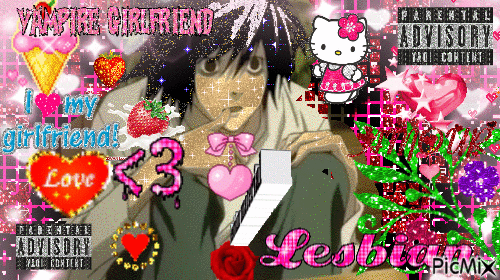
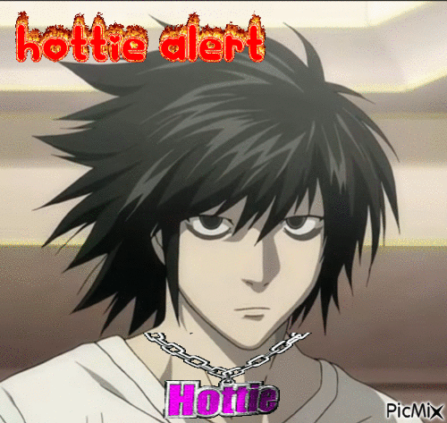
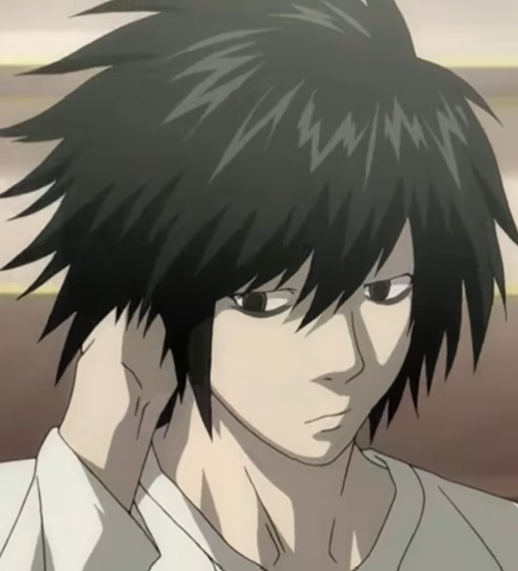

-
So rn I'm rewatching clips to remember what happened like 20 episodes ago. L DIED while I was in the middle of coding this website and I'm really sad about that so my head is filled with content that DOESN'T HAVE L in it, which sucks. Lowk wish this was a yaoi I need that so bad. T.T
Anyway, what it is reminding me is that he is actually soo smart and has a super duper intuition that lowk tricked me that the writers knew what they were doing XD "I assure you L is real" is crazy work .
Face reveal (1) got me immediately obsessed cuz, look at him, but hes loque just typical shut-in 2000s protagonist, but then immediately he just goes to scratch his head, and he's so bashful. So awkward! i'm obsessed.
You can't tell me "bang" isn't the cutest thing ever. So first off, he's smart. And he's showing his intelligence while also being funny and very endearing, like being childish, but self aware about it? The term I'm looking for is full of whimsy, but very selectively so, or more accurately, he is cold and calculated about showing his whimsy, which like, that has to be the best thing ever.
I love how he slouches! He's always just so done, but like, just cuz he's bored. He needs someone interesting and intellectually stimulating and then he's so happy! His eyes are so pretty they're like kinda creepy but in a good way. Uhh this is so disjointed because I'm just watching the clips and responding on this page. I might reformat it later!~ Xp -- but I'm thinking of a webpage "Cute L quotes" and then put everything he's ever said on the page.


{kind=link}